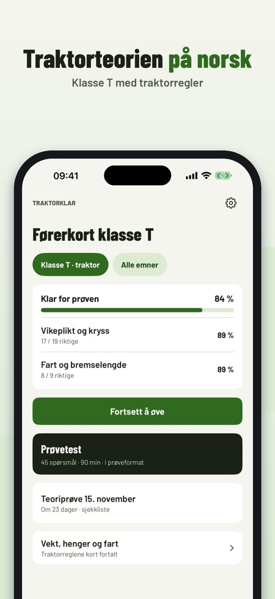
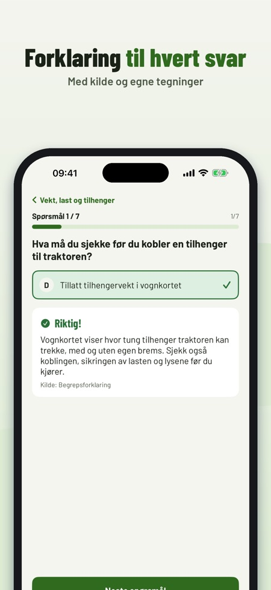
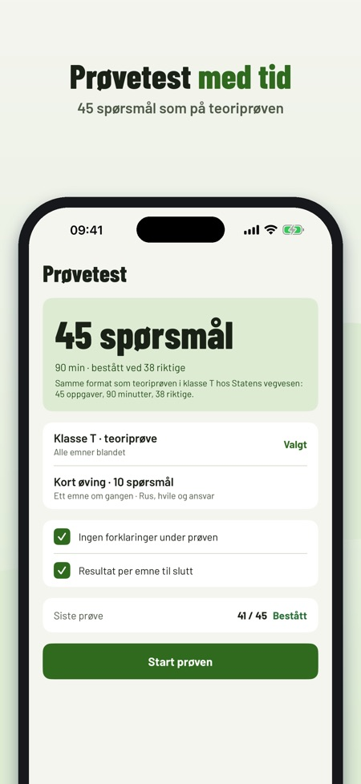

Traktorklar hjelper deg å øve teorien til førerkort klasse T, med traktorregler og ikke bilregler.



Teorien til førerkort klasse T.
Traktorregler, ikke bilregler.
Ja, prøvetester i prøveformat med tid.
Ja, den fungerer uten internett.
20 spørsmål, ordlisten og sjekklisten.
Nei. Fullversjonen er et engangskjøp som låser opp alle spørsmål, prøvetester og statistikk. Ingen abonnement.
På trafikkstasjonen, ikke i appen.
Nei, Traktorklar er uavhengig og ikke tilknyttet Statens vegvesen.
Traktorklar hjelper deg å øve teorien til førerkort klasse T – med traktorregler, ikke bilregler.
Du kan øve på 20 spørsmål, ordlisten og sjekklisten uten kjøp. Fullversjonen er et engangskjøp som låser opp alle spørsmål, prøvetester og statistikk. Ingen abonnement.
Traktorklar er uavhengig og ikke tilknyttet Statens vegvesen. Prøven tar du på trafikkstasjonen.